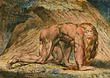

Invention
of the monotype (Late 1640s)
Castiglione
invents a new printmaking process called the monotype. A monotype is
a one-of-a-kind print made by painting on a metal plate and then transferring
the image to paper. This type of printmaking remains a popular technique
even today.
From the
collection


William Blake
Nebuchadnezzar
1795
Color monotype in tempera
Touched with pen, black ink and watercolor on whatman cream wove paper
H.16-15/16 x W.23-3/4 in.
Miscellaneous Purchase Fund
Reacting
against the intellectualism of Neoclassicism, artists and writers of
the Romantic age emphasized imagination, emotion, and intuition. To
the English poet and painter William Blake, imagination was the preeminent
element of human nature and constantly at odds with reason. This print
is a larger version of a picture from The Marriage of Heaven and
Hell (about 1790), one of several illuminated books that Blake both
wrote and illustrated. The biblical figure Nebuchadnezzar, king of Babylon,
went mad and "ate grass like an ox, and . . . his hair grew long
as eagles' feathers, and his nails were like birds' claws" (Daniel
4:33). For Blake, Nebuchadnezzar represents the bestial, which is one
of the counterparts of reason in the artist's mythology. By painting
on millboard and then transferring the still-wet image onto paper, Blake
made several copies of this startling picture. At least two others are
extant, one in the Museum of Fine Arts in Boston and the other in the
Tate Gallery in London. Blake's hand-colored prints of 1795, such as
God Creating Adam, Newton, and Nebuchadnezzar, are generally
considered his best works.